d <- tibble(
A = c(1, 2, 3, 4, 5, 6),
B = c(1, 2, 1, 2, 1, 2)
)6 Kenngrößen und Beschreibung von Verteilungen in R
6.1 Übersicht Dataframes für diese Folien
| Name | Inhalt |
|---|---|
d_ns_m |
Monatswerte für Niederschläge in Bochum |
d_ns_m_2008 |
Monatswerte im Jahr 2008 (Bochum) |
d_ns_m_2010 |
Monatswerte im Jahr 2010 (Bochum) |
d_ns_m_0810 |
Monatswerte in den Jahren 2008 und 2010 (Bochum) |
d_ns_m_nha_trang_2015 |
Monatswerte der Niederschläge in Nha Trang 2015 |
Quellen: https://www.dwd.de und https://www.gso.gov.vn
7 Kenngrößen von Verteilungen berechnen
7.1 Berechnung von Kenngrößen
Lagemaße
| Funktion | Berechnet |
|---|---|
mean(x) |
Arithmetisches Mittel |
median(x) |
Median |
Keine eingebauten Funktionen für Modus und geometrisches/harmonisches Mittel (selber definieren)
Streumaße
| Funktion | Berechnet |
|---|---|
max(x) - min(x) |
Spannweite \(R\) |
var(x) |
Empirische Varianz \(\tilde{s}^2\) |
sd(x) |
Empirische Standardabweichung \(\tilde{s}\) |
Variationskoeffizient \(v\) aus sd(x)/mean(x) berechnen, keine eingebaute Funktion für AD-Streuung
7.2 Spalten von Dataframes mit $
Dataframe
kable(d)| A | B |
|---|---|
| 1 | 1 |
| 2 | 2 |
| 3 | 1 |
| 4 | 2 |
| 5 | 1 |
| 6 | 2 |
Auswahl der Spalten der beiden Merkmale
d$A[1] 1 2 3 4 5 6d$B[1] 1 2 1 2 1 2\(\rightarrow\) Merkmal X von Dataframe d als Array (hier Verweis zu Basics von R \(\rightarrow\) Was ist ein Array?) mit d$X
7.3 Kenngrößen für Merkmale
Merkmal A
Lagemaße
mean(d$A)[1] 3.5median(d$A)[1] 3.5Streumaße
max(d$A) - min(d$A)[1] 5var(d$A)[1] 3.5sd(d$A)[1] 1.870829Merkmal B
Lagemaße
mean(d$B)[1] 1.5median(d$B)[1] 1.5Streumaße
max(d$B) - min(d$B)[1] 1var(d$B)[1] 0.3sd(d$B)[1] 0.54772267.4 Kenngrößen von echten Daten berechnen am Beispiel Niederschlag in Bochum
Beobachtungszeitraum: Spannweite von Merkmal Jahr
max(d_ns_m$Jahr) - min(d_ns_m$Jahr)[1] 86Mittelwert, Median und Standardabweichung
Im Jahr 2008
mean(d_ns_m_2008$Niederschlag)[1] 72.45median(d_ns_m_2008$Niederschlag)[1] 71.8sd(d_ns_m_2008$Niederschlag)[1] 22.23447Im Jahr 2010
mean(d_ns_m_2010$Niederschlag)[1] 73.05median(d_ns_m_2010$Niederschlag)[1] 70.15sd(d_ns_m_2010$Niederschlag)[1] 46.71366(Zahlenwerte aus dem Skript)
8 Bestimmte Werte darstellen mit geom_vline() und geom_hline()
vline wie vertical line = vertikale Linie und
hline wie horizontal line = horizontale Linie
8.1 Minimalbeispiel (mit Dataframe)
d <- tibble(A = c(1, 2, 3), B = c(0, 4, 5))
ggplot(data = d) +
geom_hline(mapping = aes(yintercept = A)) + geom_vline(mapping = aes(xintercept = B))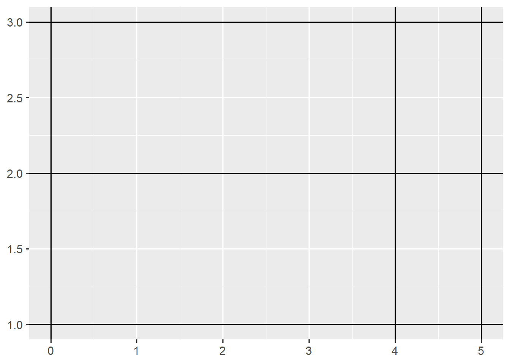
- Schnittpunkte mit Achsen via
xinterceptbzw.yintercept
8.2 Minimalbeispiel (mit Zahlenwerten)
ggplot() +
geom_hline(yintercept = c(1, 2, 3)) + geom_vline(xintercept = c(0, 4, 5)) - Werte können auch direkt angegeben werden (anstatt aus Dataframe)
- Dann kein Mapping erforderlich
8.3 Bestimmte Werte bei echten Daten darstellen
Histogramm mit Mittelwert
ggplot(data = d_ns_m) +
geom_histogram(mapping = aes(x = Niederschlag), binwidth = 10, boundary = 0) +
geom_vline(xintercept = mean(d_ns_m$Niederschlag), color = 'red')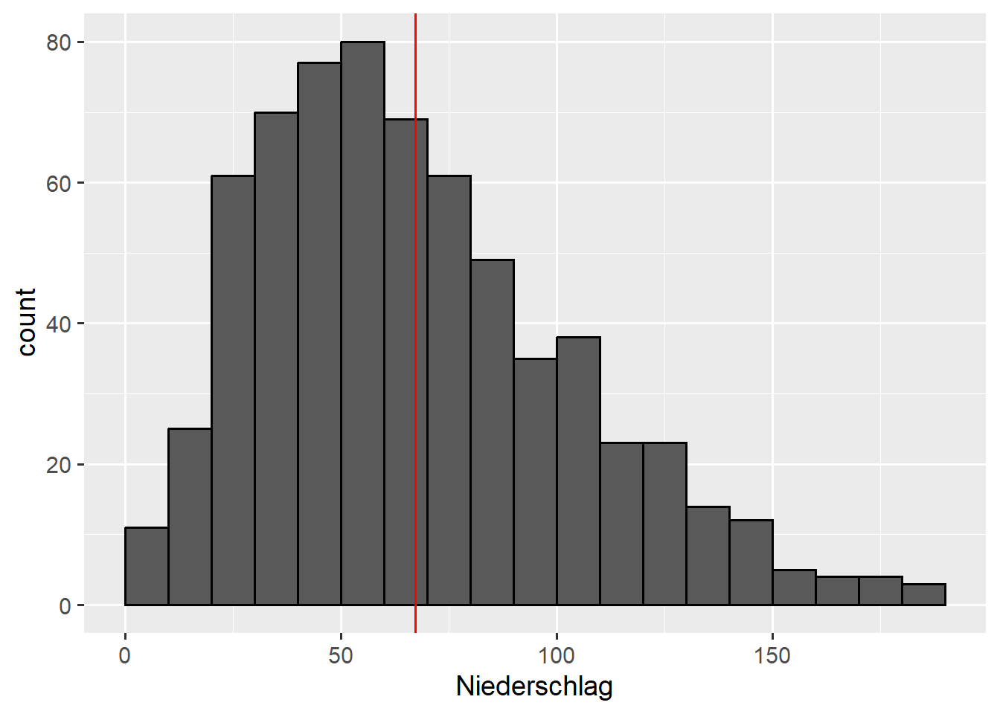
- Ohne
c(...)wenn nur ein Wert dargestellt werden soll - Linienfarbe mit
color
8.4
Mit empirischer Verteilungsfunktion
ggplot(data = d_ns_m) +
geom_step(mapping = aes(x = Niederschlag), stat = "ecdf") +
geom_hline(yintercept = c(0.2, 0.5, 0.9), color = 'blue')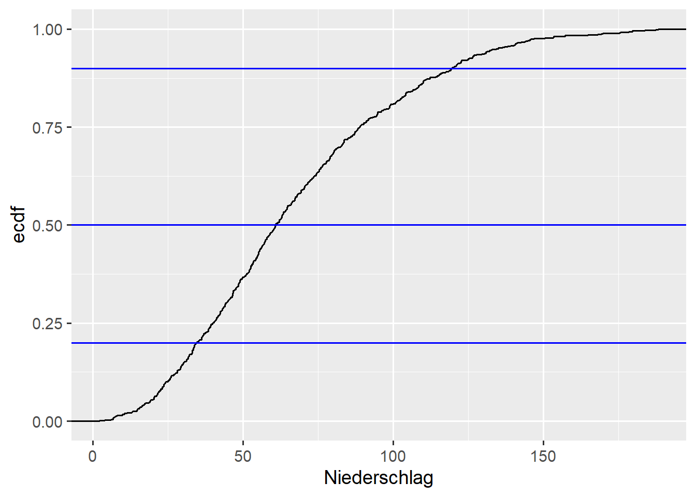
8.5
Monatsniederschläge mit Mittelwert
ggplot(data=d_ns_m_0810) +
geom_hline(yintercept = mean(d_ns_m_0810$Niederschlag)) +
geom_line(mapping=aes(x=Monat,y=Niederschlag,group=Jahr,color=Jahr)) +
geom_point(mapping=aes(x=Monat, y=Niederschlag, color=Jahr))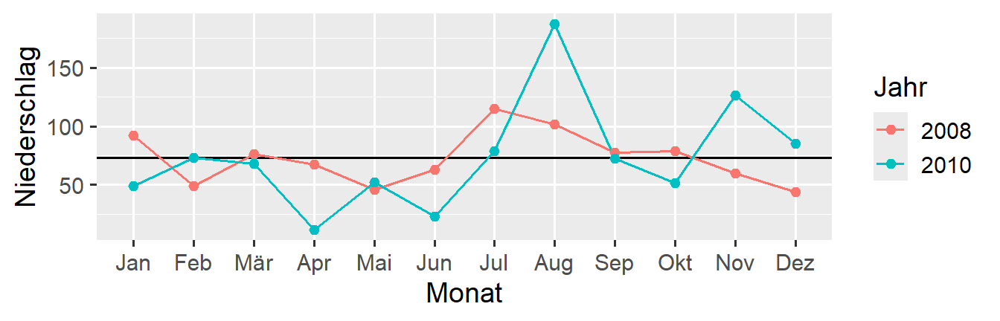
- 3 Layer übereinander, Reihenfolge beachten
- Linien mit
geom_line()(später im Detail, hier Verweis, wo zu finden)
8.6
Abweichungen vom Mittelwert
nmw <- mean(d_ns_m_0810$Niederschlag)
ggplot(data=d_ns_m_0810) +
geom_col(mapping = aes(x = Monat, y = Niederschlag - nmw, fill = Jahr))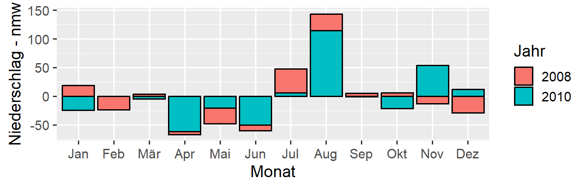
- Säulen nebeneinander mit
position = "dodge"
9 Quantile berechnen mit quantile()
9.1 Funktion quantile()
d <- tibble(X = c(1,2,2,4,4,6,6,6,9,10,10,12,13,13,13,16,17,18,19,20))
quantile(d$X, probs = c(0.2, 0.25, 0.5, 0.9), type=2) 20% 25% 50% 90%
4.0 5.0 10.0 18.5
Funktionsweise
- Gesuchte Quantilen mit
probs = c(...)angeben - probs wie probabilities = Wahrscheinlichkeiten
- Es gibt verschiedene Definitionen der Quantilwerte
- Unsere Definition mit
type = 2 - Ergebnis ist ein Named Vector (Verweis Basics, was das bedeutet)
9.2 Quantile und empirische Verteilungsfunktion
p <- c(0.2, 0.25, 0.5, 0.9)
q <- quantile(d$X, p, type=2)
ggplot(data = d) +
geom_hline(yintercept = p,color = 'blue') + geom_vline(xintercept = q, color = 'red') +
geom_step(mapping = aes(x = X), stat = "ecdf") 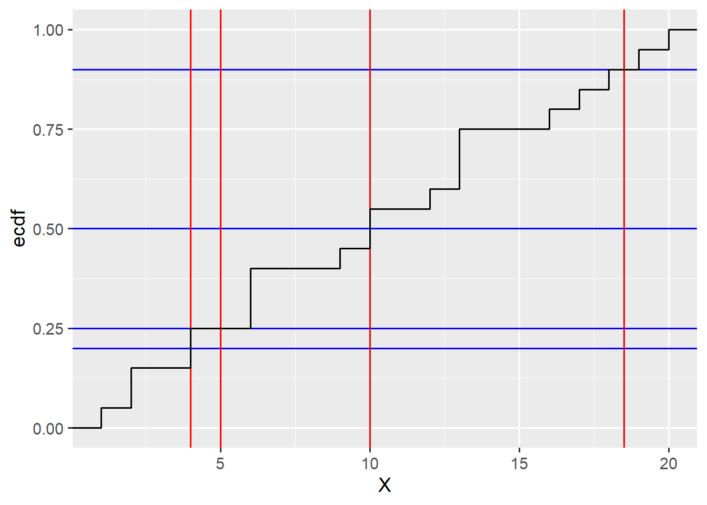
- Werte und Quantile in Variablen
pundq
10 Boxplots mit geom_boxplot() am Beispiel Niederschlag in Bochum
10.1 Monatliche Niederschläge (alle Jahre)
ggplot(data = d_ns_m) +
geom_boxplot(mapping = aes(y = Niederschlag))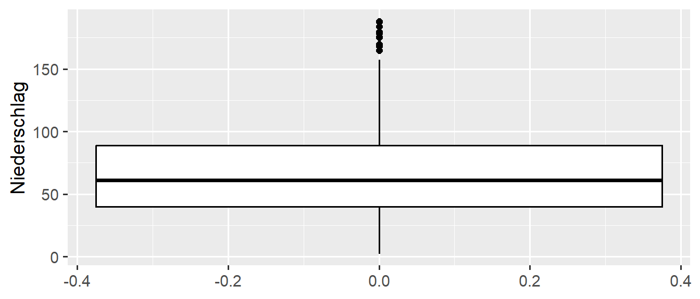
- Merkmal für y-Koordinate
10.2 Monatliche Niederschläge (Jahre 2008 und 2010)
ggplot(data = d_ns_m_0810) +
geom_boxplot(mapping = aes(x = Jahr, y = Niederschlag))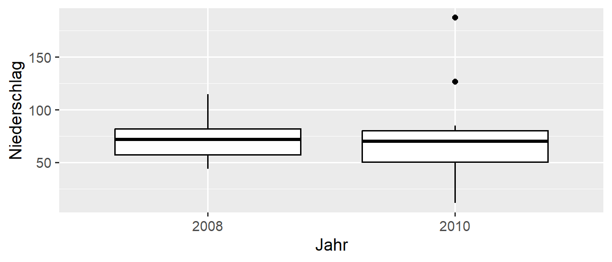
- Mehrere Boxplots mit Angabe von Merkmal für x-Koordinate
- Funktioniert nur für diskretes Merkmal (Details später, Verweis wo)
10.3 Monatliche Niederschläge (alle Jahre einzeln) 1/2
ggplot(data = d_ns_m) +
geom_boxplot(mapping = aes(x = Jahr, y = Niederschlag))Warning: Continuous x aesthetic
ℹ did you forget `aes(group = ...)`?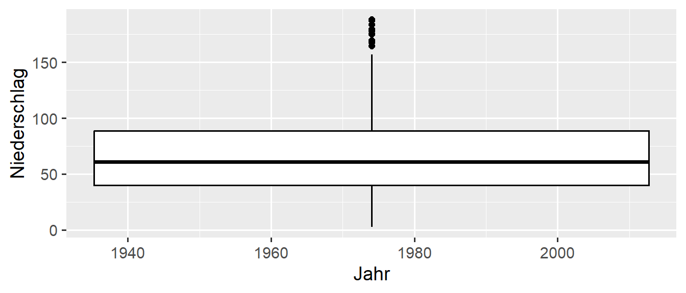
Warum funktioniert das nicht?
- Merkmal
Jahrjetzt mit vielen verschiedenen Ausprägungen - Für ggplot ist das dann ein kontinuierliches Merkmal
- Angabe von
xwird ignoriert, nur eine Box!
10.4 Monatliche Niederschläge (alle Jahre einzeln) 2/2
ggplot(data = d_ns_m) +
geom_boxplot(mapping = aes(x = factor(Jahr), y = Niederschlag))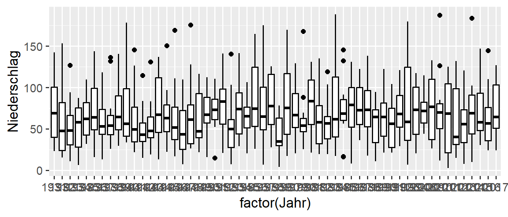
- Mit
factor(Jahr)kennzeichnen, dassJahrdiskretes Merkmal
11 Lorenzkurve am Beispiel aus dem Skript
Aus dem Paket ineq (installieren)
11.1 Lorenzkurve berechnen
d <- tibble(A = c(4, 4, 4, 4, 4), B = c(1, 1, 1, 1, 16), C = c(2, 3, 4, 5, 6))
lc_A <- Lc(d$A)
lc_B <- Lc(d$B)
lc_C <- Lc(d$C)- Funktion
Lcaus Paketineq
11.2 Ergebnis
lc_B$p[1] 0.0 0.2 0.4 0.6 0.8 1.0lc_B$L[1] 0.00 0.05 0.10 0.15 0.20 1.00- Koordinaten \(u_j\) mit
$pund \(v_j\) mit$L
11.3 Als Dataframe (Details später)
Funktion um Ergebnis von Lc in Dataframe zu konvertieren
lc_to_tibble <- function(lc) {
tibble(u = lc$p, v = lc$L)
}Beispiel
kable(lc_to_tibble(lc_B))| u | v |
|---|---|
| 0.0 | 0.00 |
| 0.2 | 0.05 |
| 0.4 | 0.10 |
| 0.6 | 0.15 |
| 0.8 | 0.20 |
| 1.0 | 1.00 |
- Eigene Funktion um Dataframe aus Ergebnis von
Lczu erzeugen - Details hierzu später
12 Bänder mit geom_ribbon()
- ribbon wie Band \(\rightarrow\) ein Flächenband zwischen zwei Linien
12.1 Minimalbeispiel 1/2
d <- tibble(A = c(1, 2, 3, 4), B = c(0, 0, 1, 2), C = c(3, 5, 6, 6))
ggplot(data = d) + geom_ribbon(mapping = aes(x = A, ymin = B, ymax = C))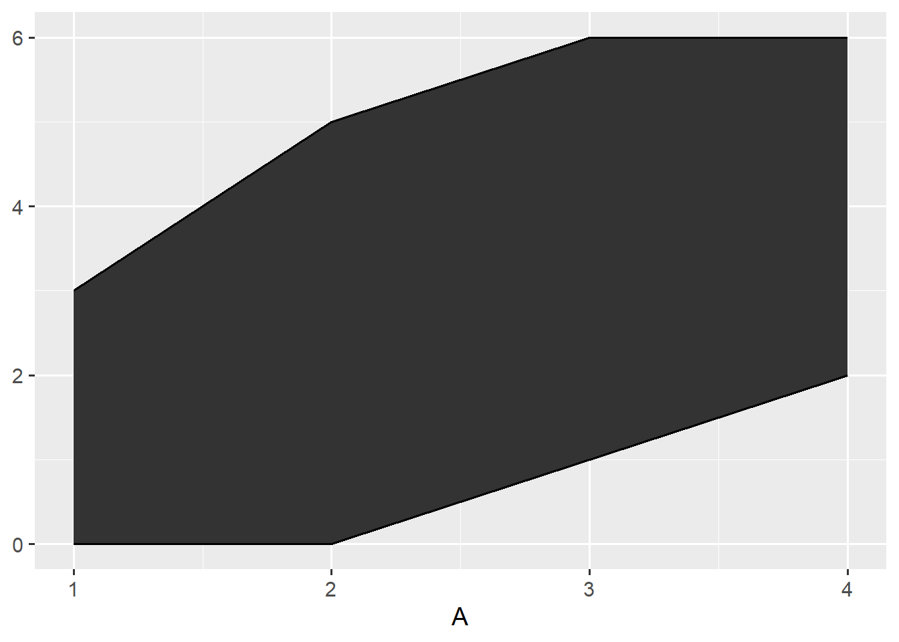
- Plottet Bereich zwischen Wertepaaren
12.2 Minimalbeispiel 2/2
ggplot(data = d) +
geom_ribbon(mapping = aes(x = A, ymax = C, ymin = 0))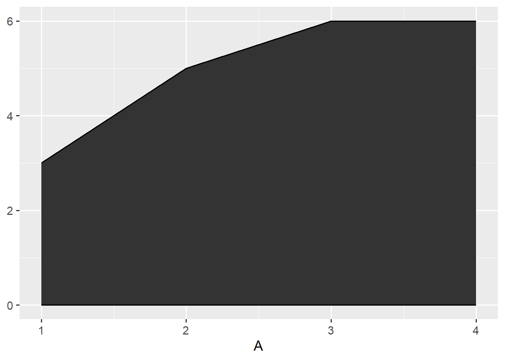
- Es kann auch ein fester Wert angegeben werden
- Anmerkung: Das geht auch mit anderen Geoms
12.3 Lorenzkurve Merkmal A (Skript S.45)
ggplot(data = lc_to_tibble(lc_A)) +
geom_ribbon(mapping = aes(x = u, ymin = v, ymax = u), color = 'black', fill = 'light blue') +
geom_point(mapping = aes(x = u, y = v))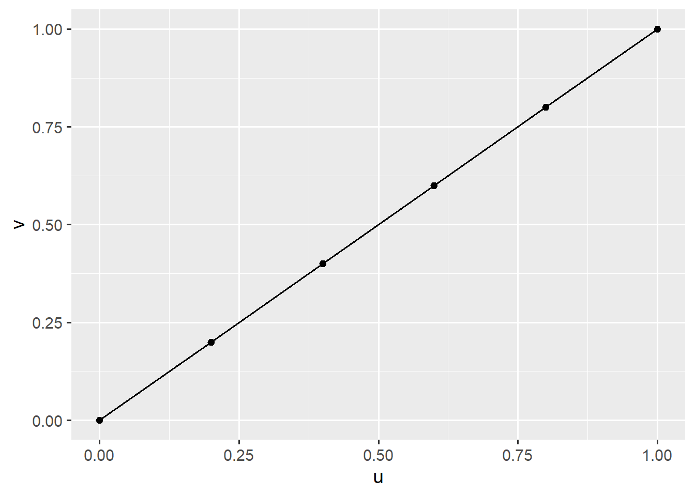
- Farben mit
colorundfill
12.4 Lorenzkurve Merkmal B (Skript S.45)
ggplot(data = lc_to_tibble(lc_B)) +
geom_ribbon(mapping = aes(x = u, ymin = v, ymax = u), color = 'black', fill = 'linen') +
geom_point(mapping = aes(x = u, y = v))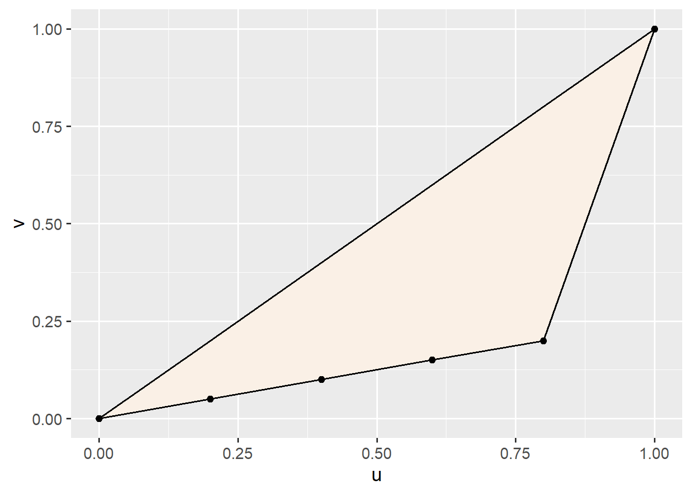
- Farben mit
colorundfill
12.5 Lorenzkurve Merkmal C (Skript S.45)
ggplot(data = lc_to_tibble(lc_C)) +
geom_ribbon(mapping = aes(x = u, ymin = v, ymax = u), color = 'black', fill = 'linen') +
geom_point(mapping = aes(x = u, y = v))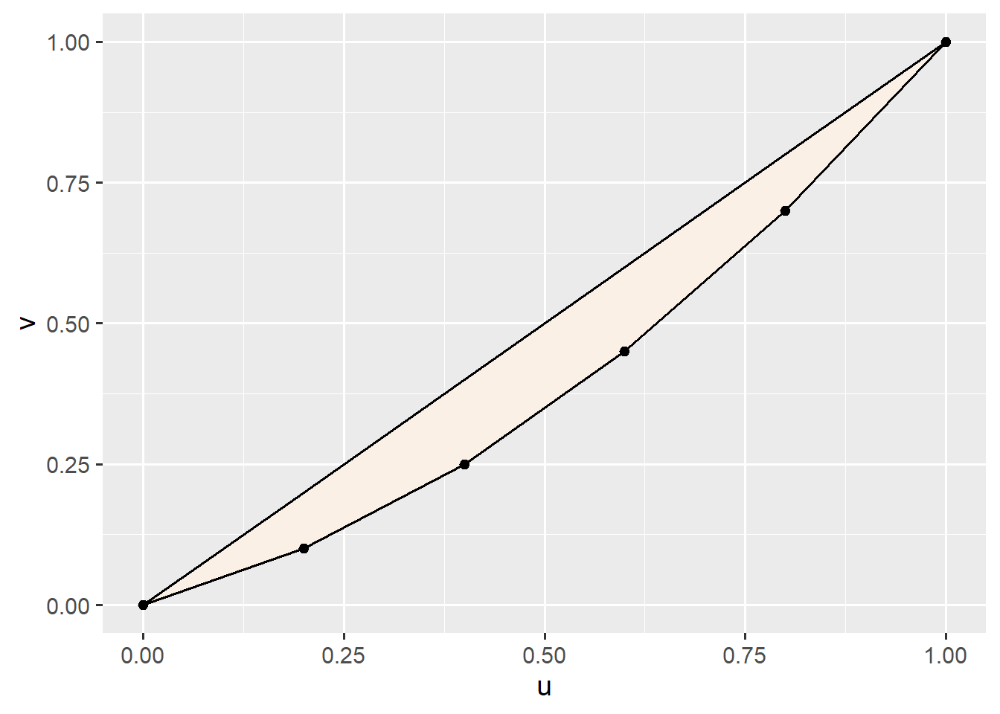
- Farben mit
colorundfill
12.6 Lorenzkurven mit echten Daten
Niederschläge Bochum (2008)
lc_bochum <- Lc(d_ns_m_2008$Niederschlag)
ggplot(data = lc_to_tibble(lc_bochum)) +
geom_ribbon(mapping = aes(x = u, ymin = v, ymax = u), color = 'black', fill = 'linen') +
geom_point(mapping = aes(x = u, y = v))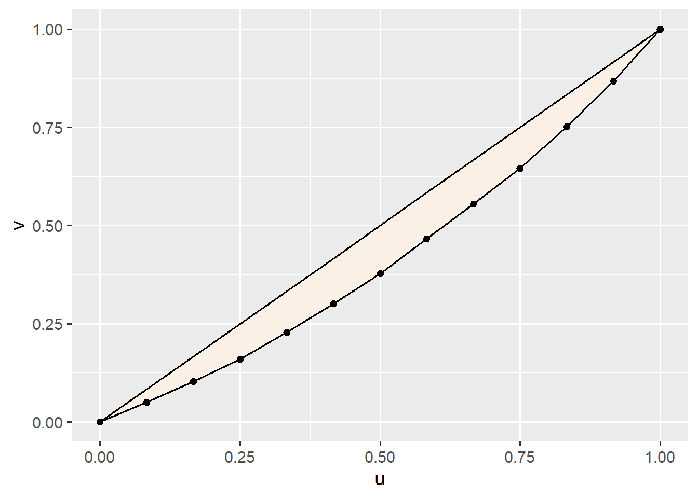
12.7
Niederschläge Nha Trang (2015)
lc_nha_trang <- Lc(d_ns_m_nha_trang_2015$Niederschlag)
ggplot(data = lc_to_tibble(lc_nha_trang)) +
geom_ribbon(mapping = aes(x = u, ymin = v, ymax = u), color = 'black', fill = 'linen') +
geom_point(mapping = aes(x = u, y = v))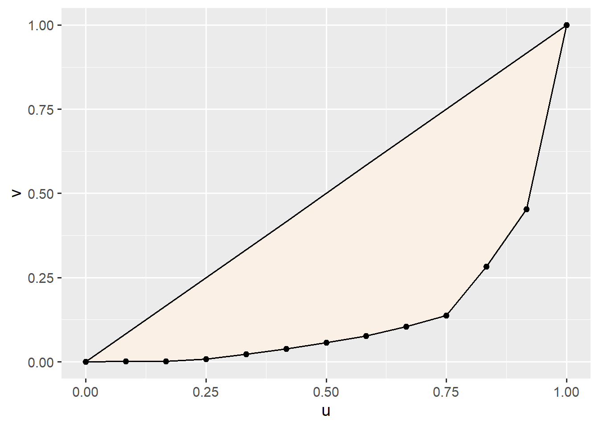
13 Gini-Koeffizient
Wieder aus dem Paket ineq (jetzt installiert)
13.1 Minimalbeispiel
Gini(c(0, 0, 0, 0, 1))[1] 0.8Gini(c(1, 1, 1, 2, 3))[1] 0.25Gini(c(1, 1, 1, 1, 1))[1] 0Gini(c(1, 1, 1, 1, 1))[1] 0- Berechnung des Gini-Koeffizienten mit
Gini(<Werte>) - Der Wert wird nicht normiert
- Normierung auf \(G^*\) falls notwendig mit Faktor
n/(n-1)
13.2 Niederschläge
Gini-Koeffizienten Bochum und Nha Trang
Gini(d_ns_m_2008$Niederschlag)[1] 0.1656315Gini(d_ns_m_nha_trang_2015$Niederschlag)[1] 0.7196082
Lorenz-Münzer-Koeffizienten Bochum und Nha Trang
12/11*Gini(d_ns_m_2008$Niederschlag)[1] 0.180688912/11*Gini(d_ns_m_nha_trang_2015$Niederschlag)[1] 0.785027114 Zusammenfassung
14.1 Linien: geom_hline() & geom_vline()
Werte aus Dataframe
ggplot(data = d) +
geom_hline(mapping = aes(yintercept = <M>), Argumente) +
geom_vline(mapping = aes(xintercept = <M>), Argumente)Werte direkt angegeben
ggplot() +
geom_hline(yintercept = c(...), Argumente) +
geom_vline(xintercept = c(...), Argumente)| AES/Argumente | Beschreibung | Optional |
|---|---|---|
| xintercept | Schnittpunkte mit x-Achse | Nein |
| yintercept | Schnittpunkte mit y-Achse | Nein |
| color | Linienfarbe | Ja |
| size | Linienstärke | Ja |
14.2 Boxplots mit geom_boxplot()
ggplot(data = d) +
geom_boxplot(mapping = aes(x = <M>, y = <M>), Argumente)
| AES | Beschreibung | Optional |
|---|---|---|
| x | Merkmal für x-Achse (diskret) | Ja |
| y | Merkmal, das dargestellt werden soll | Nein |
| Argumente | Beschreibung |
|---|---|
| varwidth | Breite entsprechend Anzahl Werte (TRUE oder FALSE) |
14.3 Bänder mit geom_ribbon()
ggplot(data = d) +
geom_ribbon(mapping = aes(x = <M>, ymin = <M>, ymax = <M>), Argumente)| AES | Beschreibung | Optional |
|---|---|---|
| x | Position auf x-Achse | Nein |
| ymin | Unterer Wert | Nein |
| ymax | Oberer Wert | Nein |
| Argumente | Beschreibung |
|---|---|
| color | Linienfarbe |
| fill | Füllfarbe |